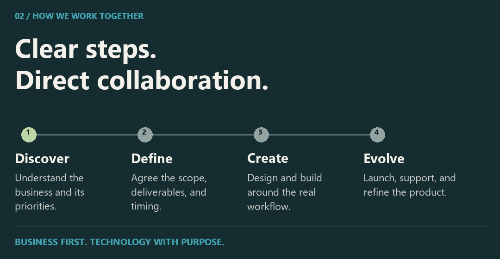

Mancar Software
We bring strategy, design, and development together to help businesses earn trust, simplify daily work, and build for what comes next. Based in Guayaquil, Ecuador, we work directly with the people behind each business, from the first conversation through launch and ongoing support.
Explore Our Projects / Meet the Company / Start a Conversation
What We Bring to a Project
We define the business need before choosing the technology. Our work spans digital experiences, product catalogs, desktop and local-network applications, workflow automation, and technical support. Every project starts with the people who will use it, the information they need, and the decisions it should make easier.
We prioritize a clear experience, dependable operation, and a foundation that can evolve as the business changes.
What We Help Improve

What These Outcomes Mean for Your Business
More Confidence. A clear public presence, useful content, and direct paths from interest to conversation help a business communicate its value from the first visit.
Less Manual Work. Focused tools centralize the details that teams need, reduce repetitive tasks, and make daily operations easier to follow.
Better Follow-Through. Work progresses through clear stages, visible decisions, and plain-language communication, so the next step is always understood.
How We Work

From the First Conversation to Ongoing Support
- Diagnose. We review the business, its priorities, the people involved, and the outcome that matters most.
- Define a Clear Proposal. We agree the scope, deliverables, timing, and implementation route before development begins.
- Design and Develop. We shape a usable experience around the brand, the workflow, and the people using it.
- Launch and Evolve. We test, publish or install, and remain available for support, refinement, and the next stage of the work.
Built to Fit the Work
We choose technology in proportion to the job: a lean public presence where clarity and speed matter, a catalog when products need to be explored, or a desktop and local-network application when a team needs continuity and control. We do not add complexity for its own sake.
The selected projects below make that approach concrete: two Windows applications for clinical teams, a veterinary clinic experience, and a furniture catalog built around real customer inquiries.
Selected Projects
01 / OdontoCare / 02 / VetCare Pro / 03 / Alma Vet / 04 / Casa Nativa
01 / OdontoCare

An offline-ready Windows application for managing patient records, appointments, treatments, and payments.
Interface captured from the repository · Fictional clinical data · Original interface in Spanish
View the Still-Image Tour / Explore the Repository →
Designed For: dental clinics managing clinical and administrative work in one place.
Core Functionality: patient histories, appointments, odontograms, treatments, payments, inventory, and reporting. The documented workflows also cover user roles, audit records, backups, and restoration.
Built With: Electron, React, TypeScript, NestJS, PostgreSQL, and Prisma.
Deployment and Engineering Details
Designed as an installable Windows application with local PostgreSQL storage. The production installer manages the required application services, allowing the clinic to work offline. The repository documents verification procedures for critical workflows, packaging, backup restoration, and installation.
Read the User Guide · Review the Release Checklist
02 / VetCare Pro

Veterinary practice software for standalone and local network environments, with clinical records, scheduling, and payments accessible across the clinic.
Interface captured from the repository · Fictional clinical data · Original interface in Spanish
View the Still-Image Tour / Explore the Repository →
Designed For: veterinary teams working from a single computer or across several computers in the same clinic.
Core Functionality: patient records, clinical histories, appointments, vaccinations, treatments, images, and payments. Local network support allows reception, veterinary staff, and the payment desk to access the same system.
Built With: Electron, Node.js, and PostgreSQL.
Deployment and Engineering Details
Supports standalone, LAN server, and LAN client modes on Windows. One computer hosts the local services and data, while the others connect through the clinic's network. This local workflow does not require internet access. The repository includes guidance for installation, network configuration, and backups.
Review the LAN Test Plan · Read the Setup Guide
03 / Alma Vet

A veterinary clinic website that guides pet owners from service discovery to a structured appointment request.
Interface captured from the repository · Repository demo content · Original interface in Spanish
View the Still-Image Tour / Explore the Repository →
Designed For: the Alma Vet clinic and pet owners requesting care.
Core Functionality: service discovery and structured appointment requests, supported by server-side validation, bot protection, persistent request storage, and email notifications. Each request is submitted for review and does not automatically confirm an appointment.
Built With: React, Supabase, PostgreSQL, Cloudflare Turnstile, and Resend.
Read the Architecture and Setup Guide
04 / Casa Nativa

A furniture retail website with an editable catalog, color variants, and structured customer inquiry workflows.
Interface captured from the repository · Repository demo content · Original interface in Spanish
View the Still-Image Tour / Explore the Repository →
Designed For: Casa Nativa and customers exploring furniture for their homes.
Core Functionality: a furniture catalog with product photography and color variants, an administration area for publishing products, and tools for space proposals and customer inquiries.
Built With: React, TypeScript, Vite, and Supabase.
Read the Catalog and Administration Guide
Start a Conversation

mancarsoftwares@gmail.com / +593 98 695 1419 / Visit Mancar Software →
MANCAR SOFTWARE · GUAYAQUIL, ECUADOR